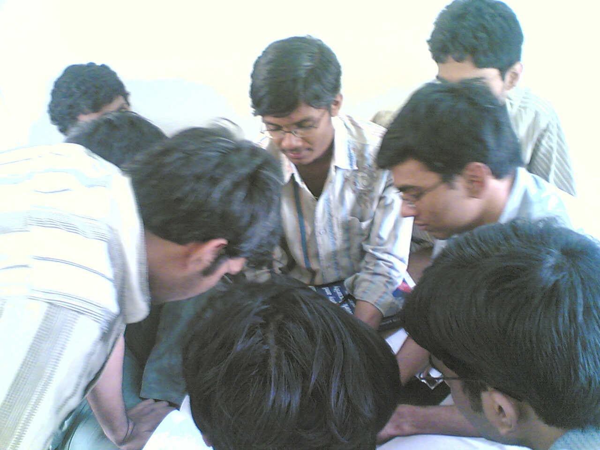
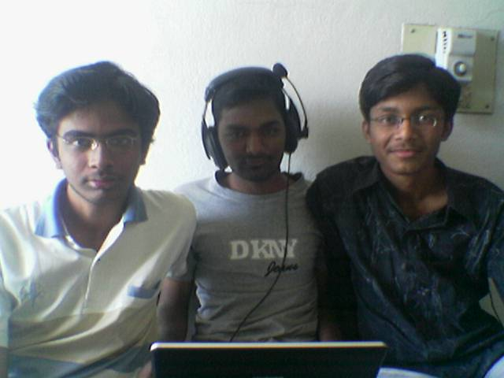

The Yearbook - Commemorating 2005-09!
Kiran Neelisetty's profile information
Name - Kiran NeelisettyBirthday - 19th August,1987
Email - kirann.8708@gmail.com
Address - 23-22-97b,SN puram,Vijayawada-11
Phone - 9966010011
Webpage - Link
Hobbies - Cricket,,Music,Browsing,No more Chatting/Flirting.....
WishList - no list...MS frm IIIT is enough
Memorabilia - Can't single out one moment from many memorable ones...
What would you want to be remembered as - Kiran Neelisetty
Future Plans - manchi job techkuni,manchi ammay ni pelli cheskuni,na sytle lo life ni njoi chestuuu......
Testimonials written by Kiran Neelisetty
Kiran Neelisetty's Album

.jpg){kind=link}
ive been doin dis 4 d last 4yrs

appatloo antha sincere!!!

.jpg){kind=link}
In 1st year
Testimonials
sana wrote-kiran...we cal him neelu..our relation started from B4 group..
a very good bowler
 , batting baa chesthav ra nuvvu ...concentrate on batting also
, batting baa chesthav ra nuvvu ...concentrate on batting also
wing cricket aithe manode king...
he is the coach to panda, erreddy and some other guys

TT baa aadathadu
flirting king
...ofcourse he stopped it now..appatlo sms lu aagevi kadu....
eppudaina bayataku velli thindaam ante ready ga vuntadu...
he is a very good frnd....
i hope u finish of ur MS asap and all de best ra..
Satish Varagani wrote-
nenu anni vishayalu andarito discuss cheyanu...konni specific vishayalu ..specfic vallatone discuss chesatanu ..alanti vishayalalo naku veedu godfather
mana batch lo dual degree vallalo veedokkade kasi gadu kadu ani na opinion ..papam kiran ..but veedu xams mundu matram sincere ga work chestadu ..mama mee buddi(bezawada) to jagratta ra ..koddiga teda anta gada ..mama kasi ga kapoina nee excellent statergies thoti buddini convince chesi ..MS tvaraga techukovalani aakankshistu...
S.Rama Krishna Raju wrote-
Kiran - IIIT ke chilipi krishnudu.
School lo lite ga thelusu.. kani veediki chala kalalu unnayani IIIT ki ochake thelisindhi
Indoor Cricket lo veediki sati ledhu.
Veedu chatting kani phone lo kani matladuthunnadante avathala undhi ammayane anesukovachu. Got great attractive power.
Abbayilu settle avvadaniki nerchukovalsina qualities chala unnayi veedi dhaggara
Inka chaduvu vishayanikosthe.. bezawada kinda M.S rachalu puttincha bothunnadu..
Em parledhu mama.. late ga ayina laest ga cheyyi
Wish u very gud and wonderful future..
Sunil Soni wrote-
neelishetty - this guy was(is) really crazy about phone ... atleast in the initial years of IIIT ... i used to see him always on fone ... always ... 24 X 7 ... recently telsindi .. cricket ante picchi ani ... many a times .. exams time lo kuda cricket adtadu .. inka wing lo adatam ante mamule ... security guard ki kopam vaste ... oka over adichii convince chese todu

and very much conscious of his hair ... all d time i c him taking care of his precious hairs

inka IIIT lo MS ante .... eagerly awaiting for d completion ... wish u d best dude ...
keep rocking
UmaMahesh.Allenki wrote-
kiran @ neelisetty @ neelu anni veede. chala baga matladuthadu
. matlani ala ala change chesthadu , ippudu cheppindhi ippude change chesi chepthadu ,adigithe chala baga cover chesthadu  .
.
movies chusthadu , cricket ,TT baga aduthadu. mama naaku TT lo spin shot ela kodathavo nerpinchava ?
chatting ante veediki ishtam adi yahoo lo aina gtalk lo aina ,cell lo aina
orkut lo aina ,sms tho aina.. etc. veedi fav heroine Genelia movies vadalankunda chusthadu.
mama final ga oka vishyam ra . arey chala janalaki gals tho chat chesi ela padeyalo teliyadu ra ...Nuvvu oka book"AMMAYILANI ELA PADAVEYALO" rasav anuko picha pichaga sales avuthaye
 . ee book rayadaniki VV sayam kavalante thesuko , ne antha vadiki cheppe vadu kadu kani koddo goppo sayam cheyagaladu ra.
. ee book rayadaniki VV sayam kavalante thesuko , ne antha vadiki cheppe vadu kadu kani koddo goppo sayam cheyagaladu ra.
ee book vache sariki late avachu ra nenu andaka vundanu kadara so naku konni TIPS ala padesthe nenu vatitho njoy chesukuntanu ra.
ALL The best for ur future mama!!!
Samuel John wrote-
veedu cricket baaney(baaga) aduthaadu ,fone lo , chatting lo ekkuva batting chestuntaadu
inkemundhi mama as usual MS cool gaa nee ishtam vachinappudu cheseyy
--------
shashank lagishetty wrote-
Neelisetty Kiran ante IIIT lo chaala mandi ishtapadatharu, kontha mandi bayapadatharu, bayata chaala mandi siggu padatharu(ammayilu). Naa pakkane kurchuntadu, brain vundi kani ekkuva ga use cheyyyadu. cricket lo racha. I was amazed after seeing his clean room.
Valla intiki poyinappudu telisindi, veedini intlo "ramudu manchi baludu" ani anukuntunnarani. Vedu chese leelalu chaala vunnayi. 2nd year lo classes vachevadu kadu, naku bayam vesedi veedi badulu naku absent vestaremo ani. enduku raledu ante ratri chatting levaledu antadu. appatlo DANTLO paddadu. always cell phone chatting.
Mana bujji gadini tittadam koncham tagginchu ra. next year manam rachalu lepudham MS mellaga chesukundam.
Bhanukiran Vinzamuri wrote-
Hmm neelu. I knew this guy just for his proxies and cell madness in the first two years. He always wanted to skip classes which was strange for me
.
Later in third year I used to be a frequent visitor to their wing and became good friends with all of them thanx to erreddy
. Neelu is a totally different guy.
He loves chatting,smsing all day long and of course putting satires and making fun of people. He rarely studies and loves the game of cricket. He has a good future as a cricket analyst or commentator for sure. He is least concerned about his MS degree
 .
.
He loves eating biryanis,pizzas and totally loves going to nice restaurants for treats. His philosophies are very famous
. He does irritate me many a times but still he is a good friend.
All the best for your MS
Himank Sharma wrote-
Neelisetty aka Asshole
This dumbass, asshole must have been the first andhraite who I befriended in IIIT. I used to sit just behind him in the classes in first semester, thereby getting a chance to disturb him as much as I pleased in the classes and gotta say I enjoyed those times a lot. Would so much enjoy his pissed off (and helpful) face when he couldnt do anything to counter me. We mustnt have had too many conversations, most of our interactions involved me hitting him by the way when we would be crossing each other in the hostels, and then he cursing me calling me an asshole. Though the guy quickly learned the secrets of the trade and later on, at times he would be the one who would succeed at hitting me and it would be me who would be left calling him an asshole instead
Another facet of this guy is, his interactions with the fairer gender, don't know too many stories about that but his orkut scrapbook would always be full of scraps of girls and almost everytime you met him, he would be hanging on the phone or texting some or the other girl.
Wishing you all the best for your future, hoping you complete your MS soon
 ...
...
Just a message to you : Try and always be in touch
Cheers! Keep Rocking..
Vamshi Velagapuri wrote-
NBH kinda oka pedda OA gadu evado untunandani appatlo talk undedhi...
A OA ganin kaluddamani velthe veedunnandu
..
Eppudu cell lo ammailatho chatinng,yahoo lo (GTALK Ledulendi) kuda ade pani...ma nana ane vadu computer isthe chedipotharu ani ...kani chedipovadam ante ilakavadama ani anukunna veeni chusaka...
Wing cricket lo oora badhudhu bade vadu...veeni debabku antha venakku poyevallu...
atu mana Bezawada kindaku velli oka ata adesukunnadani Bezawadanu talk...
ilane untu nuvvu mundhu doosukellu mama..
all the best for ur MS
itlu,
nee Vam

G. Rohit Bharadwaj wrote-
flirt, kool, negligent, Careless
The above adjectives more or less describes this fellow who like to live life in a simple way. Has the ability to make any girl fall for him. Is unique in his own sense with witty nature and unique slang. Plays cricket well and can do BC for any extent. Is another dualite who doesnt know how to react for it
maama, looking forward to spend more quality time with you,
all the best for your MS and future,
cheers,
rohit
Srirang Ranjalkar wrote-
Neelu .. one of the guys whose face hasn't changed for the past 4 years. He;s still just the same as he was in first year. Or at least I feel the same.
He had a great collection of stuff shared in DC in the first 2 years.
. He was not that talkative to me in the first year may be because we were in different sections in the beginning. But in second year, he came in form and I saw him ragging a few juniors. That was the time when even I was afraid of him coz I never thought this guy could be so harsh. I'd always seen him speaking to girls on phone in a very low voice.
Well coming to the cricket talent. Neelu is an awesome bowler
. Unlike me, he bowls perfect line, length and high speed deliveries.
The most memorable day was when we went out to see Happy Days. Nobody except you and Kothuri got the tickets and you sold those 2 tickets to some girl for 150 bucks.
and we ended up eating in the restaurant.
That was quite a memorable incident.
I will always remember you as a nice friend who doesn't get involved much in others' activities and as an awesome bowler.
All the best for your MS and future ra mama .. keep rocking
Ranga
Raghavendar Reddy wrote-
He is one guy very closest to me at IIIT.very talkative..kiran gadu matladthunte migitha
vallu listeners ga marpovalsindhe ..veedu entha complex topic ayina arati pandu velchunantha
easy ga cheppesthadu..e decision anna instataneous ga tisukuntadu and will be right in majority of
them.he has really superb reflexes
..A good analyst especially in cricket..sharktv vachaka veedi
commentory chala miss avuthunna
 .. A good all-round player in cricket especially with the tennis ball
.. A good all-round player in cricket especially with the tennis ball
Veedu na lage exams mundu one day batting adhi kuda srinu gadu prasadinchina gyanam ni exams lo rasi
pass markulu techukuntam...orkut lo 10000+ scraps in 1 month,first year lo cgpa 7.8 and second year
lo 5.5 idhi chalu mana vadiki IIIT LAN entha effect chesindo..eppudu room ki vellina 2-3 chat windows open chesi untayi
24X7 ammayilatho chatting or on the phone lo untadu...
I will never forget the satires on bhanu,kothuri and srinu.I love the nicknames u have put them at various times
especially shakleana is awesome dude..weekend parties,shoppin or movies last four years lo ekkadiki vellina veedu
undalsinde
My days at IIIT would not have been so memorable without him..All the pest for your MS raa.
Hope you will go places in future
Purushotham wrote-
neelu bammardhi, bhanu bava
neelu-kohuri rajesh
ee bandhale cheptayi neelu gurinchi. Arey anni rojula nundi chat chestunnavu, nee laptop keyboard ki em kadentra, emaina mantram vesthe maku cheppochu kada, memu baga choosukuntam laptop la ni.
Always chat chestu untadu.
Sollu kaburlu, 0.5, maada, 'ammayi laga entra' ee words use cheyadam lo ghanudu. indaka cheppina words veediki oothapadalu ayipoyayi. vadutune untadu.
Vere vallani dobbadam lo No.1, arey counters bhale vesthavu ra nuvvu. papam kothuri ganni aadukunnadu. Laddu gadu bharisthunnadu elaago.
Cricket meeda chala grisp undi. manchi batsmen & bowler. Konni sarlu oorike leni,anavasaramaina dani gurinchi argue chesthadu. konnisarlu koppadatadu.
manchi payya. ammayilu kiran name choose padipotharu. naaku telisi, hours hours chat chesedi ila padagottina ammayilato ne anukuntanu.
Buddi kinda MS. adi kooda network security practical.
oka sari veediki shashankL gaadiki conversation ila undi
ShashankL: arey MS ayyaka em cheddam ra ?
Neelu : arey nuvvu virus company okati pettara, nenu anti-virus company pedatanu, nuvvu rojuko virus create chey, nenu daniki anti chestuntanu.
em plan ra..
nuvvu paiki kanapadavu gadivi kani chala kasi gadivi ra. 1st year lo ne laptop lo adi kooda hidden folders lo 10GB P movies pettukuni choosevadu, item gaadu. nenu kooda bali ayyanu le daniki.
first year lo naa room pakkane unde vadu, konni sarlu naa roomie gadu nidrapoyi talupu teeyakapote, veedi room lo ne padukune vanni.
helping nature baane undi, ayithe adigina ventane ivvadu, konchem savadobbi maree isthadu, inka vellipodam ane stage lo isthadu. malli ivvakunda undadu. em anandamo ento .
arey mama All the best ra, MS in 2 years, Buddi pagilipovali nee thesis choosi.kummey enjoy the life, keep rocking ..